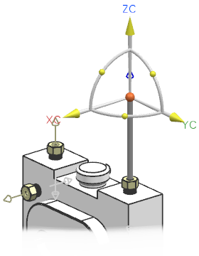
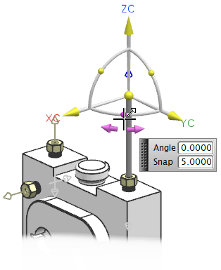
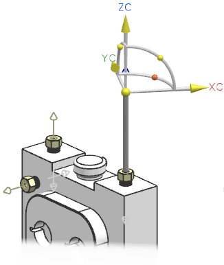
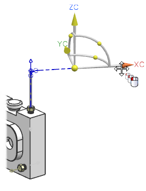
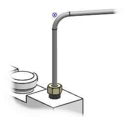

在模式列表中选择动态轴。

动态 CSYS 将会出现在第一条管线段的末端。
点击 XC—YC 旋转手柄。

在角度输入框中键入150并回车。

CSYS 将绕着 ZC 轴旋转。
选择 XC 平移手柄。
在捕捉输入框中键入10。
将 XC 手柄拖动至距离为150的位置。

|
注释 |
您也可在距离输入框中键入150。 |
这一次，将在路径中出现折弯段。同时型材也已经添加到新的管线段中。
